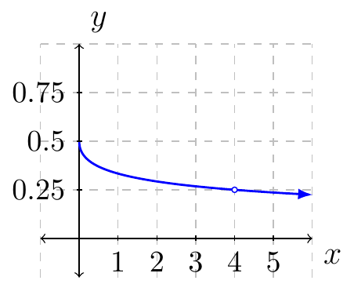

Section 2.1
Given \(y=f(x)\) is a function defined everywhere on the interval \([a,b]\). The average rate of change of the function over that interval would be:
or
where \(\Delta y = f(b)-f(a)\) and \(\Delta x = b-a\).
When \(\Delta x \ne 0\) then the quotient is defined. However, in order to find the instantaneous rate of change we require \(\Delta x = 0\) (or at least approach zero).
Example 1
Let \(f(x)=\sqrt{x}\).
Find the average rate of change over the interval \([4,9]\).
Solution:
Therefore, the average rate of change is:
Find the instantaneous rate of change at \((4,2)\).
Solution:
If we consider the average rate of change of \(f\) near \(4\) we have the following expression to look at:
where the variable \(x\) is a value near \(4\). If we plot the function we have:

From the graph we can see that the slopes are approaching \(0.25\) but never will touch it.
We say that the instantaneous rate of change of \(f\) at \(x=4\) is \(0.25\).
In the next section we will look at a more defined way of approaching this concept. The operator we will use is called the limit operator.